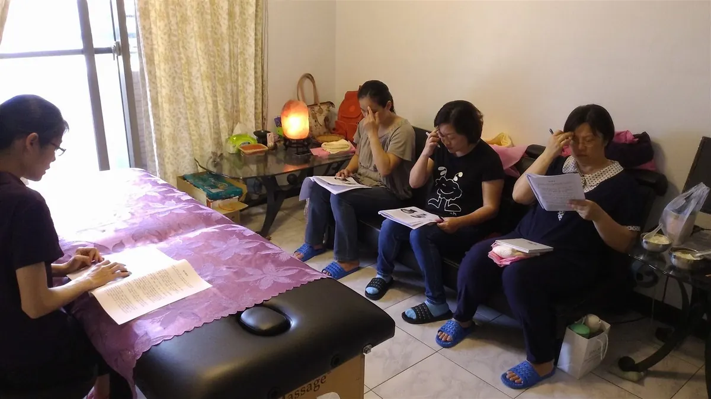

The Bojin Journal · Eyes
Is your eye cream just sitting on top?

Much of the time, it is not the cream at all. When the skin around your eyes is cool, a little tight, and untouched, even a good cream has a hard time settling in. Warm the area first, press the cream in with intention, and work in a simple order: that same jar can feel different.
Why does my eye cream sit on top of my skin?
The skin around your eyes is the thinnest on your whole face, and it tends to run cooler than the rest of you, especially first thing in the morning or late at night. Cool, still skin does not welcome product the way warm, gently worked skin does. So the cream lingers on the surface, and you are left blinking at a greasy shine instead of feeling it sink in.
There is also the matter of how most of us were taught to apply it, which is barely at all. A quick dab under each eye, a couple of pats, done. That is not giving the cream a chance. The area is tight from a night of sleep or a long day of screens, fluid has pooled, and nothing has warmed or moved before the product lands.
None of this is your fault. No one ever showed you that the application itself is half the job. Once you know that, the fix is simple and takes only a few minutes.
How the Bojin Method helps your cream sink in
First, what bojin is. If you already know gua sha, you have a head start: bojin grew from the same family of Chinese hands-on face care, so it will feel familiar. It is still its own deliberate method. What makes it work is three things: the order you work in, the angle you hold the tool, and the exact spot you are working.
The traditional tool is a bojin stick, a slim, polished stainless steel tool shaped to follow the curves of your face, and you use its rounded edge. You can start with clean fingertips while you learn the moves, or a smooth-edged tool you already own such as a gua sha stone, but the stick is what the method was built around. The pressure is not the barely-there touch people assume, and it is not forceful either. It is the right, comfortable pressure for you, firm enough to be felt, never enough to hurt or drag this delicate skin.
For eye cream, this matters because a tool by itself usually comes with no method attached. Warming the area gently, then pressing the cream in at the right angle and in the right order, gives it a path to settle and helps the skin look fresher and more awake. Add that method, and the same few minutes feel different.
Around your eyes, comfortable pressure matters most: firm enough to feel, gentle enough to never hurt, held at the right angle, worked in the right order and the right spot. That order, angle, and placement is the method, and it is what helps the cream sink in instead of sit.

The 5-minute eye-area reset
Use the rounded edge of your bojin stick, or clean fingertips while you learn. Add your eye cream or a drop of facial oil first so nothing drags across the skin. Work in order, follow the angle of the bone, and use the right comfortable pressure, not featherlight and not forceful.

Warm the area first
Rub your hands together for a few seconds, then cup them gently over closed eyes and let the warmth soak in. Warm skin welcomes cream far better than cool, tight skin does.
Read your face first
Before you move anything, look in the mirror and notice which side feels more puffy, tight, or tired. Whichever side needs more attention is where you will start, and that sets the order for everything that follows.
Press the cream in, do not rub
Dot your cream along the brow bone and the socket bone, then press it in with the rounded edge or a fingertip, one gentle press at a time. Pressing helps it settle instead of smearing across the surface.
Sweep along the socket bone
Glide from the inner corner outward along the bone under your eye, keeping the angle low against the bone and the pressure comfortable. Stay off the eyeball itself and let the angle, not force, do the work.
Finish down the sides of your neck
This is the step almost everyone skips. Sweep gently down the sides of your neck a few times so pooled fluid has a path to drain away, which is what leaves the whole area looking less puffy and more rested.
What can I expect?
Most women notice the everyday wins first. The cream feels absorbed instead of sitting in a shine, the area looks a little brighter and less puffy, and you feel calmer and a touch more confident at the mirror. Done as a regular gentle ritual, it can help your skin look fresher, more awake, and a little more lifted-looking, and it gives your serum or cream a better chance to do its part.
Now the honest limits. This helps your cream absorb and the area look rested, but it does not make any cream work miracles, and it will not remove fine lines, erase bags, or reverse aging. This is gentle self-care, not a treatment, and results are gentle and everyday rather than lasting. If puffiness or a change around your eye comes on suddenly, sits on only one side, or comes with pain, please see your doctor rather than reaching for a routine like this.
Give your cream a warm, worked surface to settle into, and it finally gets the chance you have been paying for all along.
Quick answers
Do I need to change how I apply my eye cream, or should I buy a better one?
Before you spend more, try changing the application. When skin is cool, tight, and untouched, even an expensive cream tends to sit on top. Warming the area and pressing the cream in, in a simple order, often does more than switching jars.
Can I use a gua sha stone, or do I need a bojin stick?
You can start with a gua sha stone or clean fingertips while you learn the moves. A bojin stick is the traditional tool the method was built around, but the real difference is not the object in your hand. It is working in the right order, at the right angle and spot, with a comfortable pressure.
How hard should I press around my eyes?
Comfortably. This is the thinnest skin on your face, so you want pressure firm enough to be felt but never enough to hurt or tug. Too light does nothing, too hard is wrong, and the angle matters more than the force.
How often can I do this, and will it get rid of my under-eye lines?
You can do it a few times a week as part of your routine. It helps your cream absorb and leaves the area looking fresher and less puffy, but it will not remove lines or bags. Think of it as gentle upkeep, not a treatment.
See exactly how to press it in
Watch the free 3-minute video and follow along. It shows you the order to work in, the angle to hold, and the exact spot to press, so you can feel the right comfortable pressure for yourself and finally get your eye cream to sink in.
Watch the free 3-min videoYu-Ting Lan is a Taiwan-based international bojin instructor and the founder of Héhé Studio. She has taught her bojin method to more than a thousand students, from complete beginners to grandmothers, across Taiwan, Hong Kong, and Malaysia.